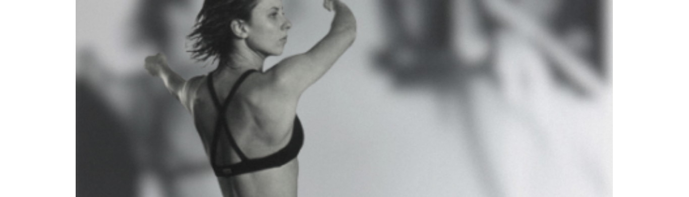

a produtora
Histórias em movimento.
Muito prazer, eu sou Luiza Continentino. Minha trajetória começou na dança e, aos poucos, se desdobrou na condução de processos criativos, equipes e experiências coletivas. Durante dez anos fui bailarina da companhia Deborah Colker, onde aprendi, na prática, o rigor da criação, a força do trabalho em grupo e a atenção aos detalhes que sustentam uma obra. Depois, esse repertório encontrou outros territórios: a formação de pessoas, a criação de espaços de desenvolvimento e o trabalho em contextos sociais complexos, sempre atravessado por escuta e leitura de relações.

É desse percurso e do meu desejo de participar do registro de histórias reais que nasce a DADA. Uma produtora dedicada a projetos audiovisuais de não-ficção, com atenção ao processo de cada obra, às relações que a sustentam e às escolhas que definem sua forma. Nesse caminho, conto com a interlocução de Gustavo Gama Rodrigues, meu parceiro de vida e parceiro estratégico da DADA. Sua vasta e consistente vivência no documentário amplia o nosso horizonte e fortalece a realização dos projetos.